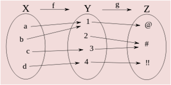
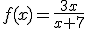

Definimos la suma, resta, multiplicación y división de funciones como:
· (f ± g)(x) = f(x) ± g(x)
· (f · g)(x) = f(x) · g(x)
· (f/g) (x) = f(x)/g(x) (if g(x)≠0)
Ejemplo: si f(x) = x2 -2 y g(x) = 3x + 2, entonces:
(f + g)(x) = f(x) + g(x) = x2 + 3x
(f - g)(x) = f(x) - g(x) = x2 – 3x - 4
(f · g)(x) = f(x) · g(x) = 3x3 + 2x2 – 6x - 4
(f/g) (x) = f(x)/g(x) = (x2 -2)/(3x + 2), if x ≠ -2/3
La composición de funciones es la aplicación de una función al resultado de otra. Se representa por g˚f, y decimos “f compuesta con g”.
g˚f(x) = g(f(x)) (si f(x)Є Dom g)

Ejemplo: si f(x) = x + 1; g(x) = x2, entonces:
g˚f(x) = g(f(x)) = g(x + 1) = (x + 1)2 = x2 + 2x +1
f˚g(x) = f(g(x)) = f(x2) = x2 + 1
NOTA: como se puede ver en el ejemplo, la composición de funciones no cumple la propiedad conmutativa
g˚f ≠ f˚g
La función inversa de f es una función que deshace otra función, es decir, es la función f-1 tal que f˚ f-1(x) = f-1 ˚f (x) = i(x) = x
Ejemplo 1: si f(x) = x2, entonces f-1(x) = √x, porque
f˚ f-1(x) = f(√x) = (√x)2= x
f-1 ˚f (x) = f-1(x2) = √x2 = x
Ejemplo 2: si f(x) = 1/x, entonces f-1(x) = 1/x, porque
f˚ f-1(x) = f(1/x) = 1/(1/x)= x
f-1 ˚f (x) = f-1(1/x) = 1/(1/x)= x
Ejemplo 3: encuentra la inversa de f(x) = √(2x)
x = √(2y) → x2 = 2y → y = f-1(x) = x2/2
NOTA: las funciones inversas son simétricas y su eje de simetría es la recta y = x
Ejercicios:
1.- Si f(x) = x2 + 2 y g(x) = x - 2. Calcula:
a) (f + g)(x)
b) (f - g)(x)
c) (f · g)(x)
d) (f/g)(x)
e) (g º f)(x)
f) (f º g)(x)
2.- Encuentra la función inversa de estas funciones:
a) f(x) = x2 - 7
b) 
Soluciones:
1.- a) y = x2 + x; b) y = x2 - x +4; c) y = x3 - 2x2 + 2x - 4; d) y = (x2 + 2)/(x -2); e) y = x2; f) y = x2 - 4x + 6
2.- a) y = √(x+7); b) y = (-7x)/(x-3)